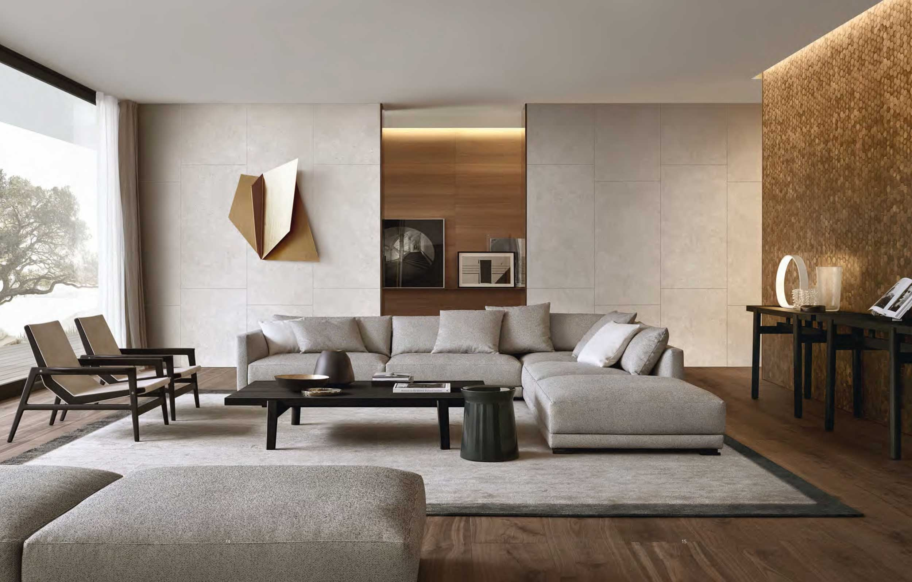
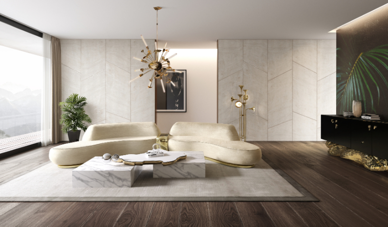

Modern Luxury Design
The key elements of a luxury living room design are eye catching furniture pieces, sculptures, feature walls, unique lighting fixtures, and metalic texture. The living room shown above is luxury but not flamboyant. The luxury style is more subtle where the use of metallic gold color is on the art piece as well as the gold-coloured feature wall. Modern luxury interior design blends sophistication, functionality, and elegance to create spaces that exude opulence while maintaining a contemporary aesthetic. Characterized by clean lines, high-end materials, and a neutral yet rich color palette, this style emphasizes a seamless balance between comfort and grandeur. Elements such as marble, brass, velvet, and bespoke furnishings elevate the ambiance, while strategic lighting enhances the depth and warmth of the space. Thoughtfully curated art pieces, statement décor, and smart home technology further contribute to a refined yet inviting atmosphere, making modern luxury interiors a perfect blend of innovation and timeless sophistication.
Minimalist Luxury
Minimalist luxury focuses on clean lines, neutral colors, and open spaces to create a sense of elegance and sophistication. It emphasizes functionality while maintaining a sleek, modern aesthetic. The sumptuous sofa and the chairs set a luxury tone for the living rooms. Minimalistic luxury interior design combines the simplicity of minimalism with the refined elegance of luxury, creating sophisticated yet uncluttered spaces. This design approach emphasizes clean lines, high-quality materials, and a neutral color palette, allowing each element to make a statement without overwhelming the space. Thoughtful use of textures, such as marble, natural wood, and soft fabrics, adds depth and warmth, while carefully curated furniture and décor maintain a sense of understated opulence. Subtle lighting, often through recessed fixtures or sculptural pendant lights, enhances the ambiance, ensuring a harmonious balance between functionality and aesthetics. The result is a serene, effortlessly chic environment that exudes sophistication and timeless appeal.
Green Luxury
Green luxury design incorporates sustainable materials, indoor plants, and eco-friendly elements. It blends nature with high-end decor to create a tranquil and environmentally conscious living space. Green luxury interior design combines sustainability with high-end aesthetics, creating spaces that are both opulent and eco-conscious. This design approach integrates eco-friendly materials such as reclaimed wood, natural stone, organic fabrics, and non-toxic paints, ensuring minimal environmental impact without compromising on sophistication. Energy-efficient lighting, smart home technology, and biophilic elements like indoor gardens and living walls enhance both the ambiance and sustainability of the space. High-quality craftsmanship and bespoke furniture made from sustainable sources elevate the luxurious feel while promoting responsible consumption. By blending elegance with environmental mindfulness, green luxury interior design offers a harmonious balance between comfort, style, and sustainability.